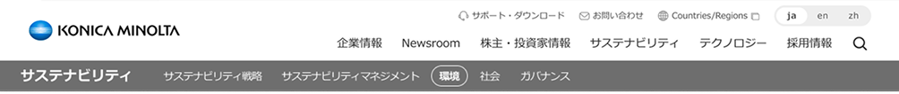

私たちは、人財の多様性こそが、これまでにない革新的な発想をもたらし、経営ビジョンに掲げる「人間中心の生きがい追求」と「持続可能な社会の実現」を高次に両立させるソリューションを生み出す源泉と考えます。
私たちは、社会的マイノリティへの公平性・包括性の向上、従業員一人ひとりの異なる強みを最大限発揮できる組織風土の醸成に長年にわたり取り組み、2003年のコニカとミノルタの経営統合以降、これらの取り組みを加速させてきました。これからは、経営ビジョンを実現し、社会のなかで認められ持続的成長を果たしていくために、Diversity, Equity and Inclusion（以下、DEI）推進をコニカミノルタグローバルで一体となり、より強化していく必要があります。
一人ひとりが、互いの個性を歓迎し、理解し、認め合い、そしてともに挑戦を楽しむ。「知の結集」につながる創造性・問題解決・イノベーションを刺激する「個の輝き」を実現するコニカミノルタへ
私たちを取り巻く環境の劇的な変化に対応するには、今までの延長線上にはない視点や発想を引き出し、取り入れた、新しい価値の創造が期待されます。コニカミノルタグループ行動憲章に掲げる「7. 人財育成と組織風土醸成」を実践するために、当社におけるDEI推進の基本的な考え方となる、コニカミノルタグループ ダイバーシティ経営宣言を2023年に社内外に発信しました。
私たちは、Diversity【個の輝き】、Equity【公平な機会】、Inclusion【知の結集】を推進することで、あらゆるステークホルダーの多様性を認め共感することから共創へとつなぎ、顧客企業の成長に寄与する新しい価値を創造し、提供し続けます。そして、顧客企業とともに、誰もが生きがいや幸せを追求でき、さらには豊かで持続可能な社会の実現を目指します。このダイバーシティ経営宣言に基づき、DEIの観点からコニカミノルタが目指す姿を明確化し、推進体制を整えて、計画的に施策を実行していきます。
新中期経営計画のもと、自社およびお客様・社会での生産性を高め、創造的な時間を創出し、個々が輝ける環境を整備するため、Diversity・Equity・Inclusionの3要素について重点施策を策定し、KPIを設定しています。コニカミノルタグループ ダイバーシティ経営宣言に基づき、2022年12月に2023年度から2025年度に実施する重点施策を策定、KPIを設定しました。
違いを力に！ 経営ビジョンの実現に向けて目指す姿として、Diversity【個の輝き】、Equity【公平な機会】、Inclusion【知の結集】の3要素について、それぞれ2030年に目指す姿を定めています。
| 項目 | 2030年の姿 | 考え方 |
|---|---|---|
| Diversity 【個の輝き】 |
あらゆる意思決定の場の多様性の確保 |
|
| Equity 【公平な機会】 |
能力発揮を妨げるハンディキャップの最小化 |
|
| Inclusion 【知の結集】 |
誰もが活発に発言し、意見を交え、新しい発想を創出 |
|
| Diversity【個の輝き】 | Equity【公平な機会】 | Inclusion【知の結集】 | |
|---|---|---|---|
| コニカミノルタグループ |
|
||
| コニカミノルタ（株） |
|
|
|
| 区分 | 実績 | 目標 | ||||
|---|---|---|---|---|---|---|
| 2023年度 | 2024年度 | 2025年度 | 2025年度 | 2026年度 | 2030年度 | |
| コニカミノルタグループ | 21.1% | 19.2% | — | — | 23%以上 | 26%以上 |
| コニカミノルタ（株） | 10.7% | 11.1% | — | — | 13%以上 | 18%以上 |
※コニカミノルタグループ：各年度末時点。コニカミノルタ（株）および国内連結子会社ならびに200名以上の海外連結子会社の主要な約50社を集計。集計範囲は連結グループのうち人数ベースで2021年度は87％、2022年度は88％以上、2023年度は86％以上、2024年度は85％以上をカバーする。
※コニカミノルタ（株）：各年度の翌４月１日時点の正規従業員対象 ※なお2030年度は2030年４月１日時点
| 区分 | 実績 | 目標 | |||
|---|---|---|---|---|---|
| 2023年度 | 2024年度 | 2025年度 | 2025年度 | 2026年度 | |
| コニカミノルタグループ | 7.6 | 7.6 | — | 8.0以上 | — |
| コニカミノルタ(株) | 6.6 | 6.7 | — | 7.0以上 | — |
※以下設問について、0〜10段階での回答の平均点／公平性：「自身が所属する部門・チームでは、あらゆるバックグラウンドを持つ人々が公平に扱われている」
※FY23〜25方針としてFY21調査時点での同業種ベンチマークをベースに目標値を設定
| 区分 | 実績 | 目標 | |||
|---|---|---|---|---|---|
| 2023年度 | 2024年度 | 2025年度 | 2025年度 | 2026年度 | |
| コニカミノルタグループ | 7.3 | 7.4 | — | 8.0以上 | — |
| コニカミノルタ(株) | 6.8 | 6.9 | — | 7.5以上 | — |
※以下設問について、0〜10段階での回答の平均点／意見の自由：「自身が所属する部門・チームにおいて自身の意見が尊重されている」
※FY23〜25方針としてFY21調査時点での同業種ベンチマークをベースに目標値を設定
KPIの目標値達成に向けて、継続・先行して取り組んでいる施策は次のとおりです。
代表執行役社長が任命したダイバーシティ推進担当役員が統括しています。各事業・機能を担当する執行役、執行役員の責任のもとでの目標達成に向けた施策実行（縦糸）と、主要会社に設置されているDEI推進部署によるグループ各社支援（横糸）により、コニカミノルタ（株）に設置された「違いを力に！推進室」がリードするかたちで、コニカミノルタグループを網羅し一体となってDEI推進を加速させていきます。そして、進捗状況を定期的に取締役会に報告し、着実に目指す姿の実現に向けて行動します。
「2030年目指す姿」の実現に向けては、各事業・機能を担当する執行役、執行役員が責任を持ち、事業・機能別の2025年度末目標の設定・施策立案を行います。そして、各事業・機能の経営戦略の一つとして推進していきます。
数値目標の達成だけでなく、真のDEIを実現するために、コニカミノルタグループの主要会社に設置されているDEI推進部署が、保有する専門知識と経験をもとに、グループ会社のDEI推進を支援していきます。
2024年度は、コニカミノルタ（株）を含む主要グループ会社において、2022年度から2023年度に策定した各社の特徴にあったDEI推進計画（24カ国27社で策定）に沿って、活動を継続しています。
その結果、目標には届きませんでしたが、グローバル構造改革という経営として痛みをともなう改革を進めたなかでも、KPIに設定した従業員エンゲージメント調査の設問項目について、維持・向上を図ることができました。
2030年のコニカミノルタが目指す姿を実現するためには、各社・各事業がそれぞれ必要な取り組みを進めることが重要です。今後も、各組織が強みや課題を踏まえた対応を行い、コニカミノルタグループ一体となって、粘り強くDEI推進を進めます。
DE&I推進にあたっては、「多様な人財が活躍できる風土づくり」と「女性活躍推進」を2つの軸として、それぞれ詳細な取り組みを展開しています。各カードをクリックすると個別ページに遷移します。
「ワークライフバランス」「障がい者雇用」「個が輝き、知を結集する組織風土」の3テーマから、多様な人財が活躍できる風土づくりに取り組んでいます。育児・介護の両立支援制度や、特例子会社コニカミノルタウイズユー、グループ一体のDEIトレーニング・啓発活動など。
女性のキャリア形成支援（エグゼンプト候補層の育成強化／役員層の女性割合拡大）、グループ会社の取り組み（Women 2 Leadプログラム／コニカミノルタジャパン他）、社外からの評価・認定（くるみん／えるぼし）を展開しています。